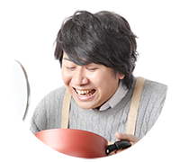

練馬区・板橋区中心の地域密着型の造園会社を想定して作成いたしました。
会社側とお客様側の要望をそれぞれ細かく想定し、結果、全体的に落ち着いた印象で顧客に安心感を与え、写真を多めにしお客様のイメージが湧きやすいようにしました。
ー サイト情報 ー
サイトURL作業内容・所要時間
- 情報収集
- 25h
- 企画・コンセプト立案 5h
- 5h
- ワイヤーフレーム・デザイン
- 5h
- 素材収集
- 10h
- ロゴ作成
- 0.5h
- 画像加工
- 2h
- HTML
- 15h
- CSS
- 30h
サイトの目的
新規顧客の獲得、お客様の庭造りへのモチベーションの向上、新規従業員の獲得
企業側の要望
- 伝えたい内容：会社の理念や雰囲気、植栽の手入れから外構工事など幅広く対応可能であること、長くお付き合いをしたいということ
- 与えたい印象など：親しみや安心、出来上がるお庭等のイメージ、造園業者で働くイメージ
お客様側の要望
- 知りたい情報：会社が対応できる範囲、施工事例、職員の雰囲気
- 知りたい理由：庭造り等のアイディアが欲しい。安心して任せられるか判断したい。（要望を汲み取り、提案をしながら最適なプランを提案してくれるか）造園業に興味がある。
ターゲット
20代後半～60代 植栽・庭造り・外構工事を希望する個人/団体（ペルソナ6人作成）
ペルソナ① 40歳女性 職業：出版社社員 家族構成：4人（子供2人）

- 世帯年収：1000万（共働き）
- 学歴：大卒
- 居住地：練馬区
- 趣味・特徴：観劇・映画鑑賞。中型犬を飼っている。
- 要望：子供が飼い犬と遊べる、安全で広い庭を希望。
- 施工内容：植栽、外構工事、人工芝の設置
ペルソナ② 33歳男性 職業：配送業 家族構成：5人（子供3人）

- 世帯年収：700万
- 学歴：高等専門学校卒
- 居住地：板橋区
- 趣味・特徴：ツーリング・釣り。バイク置き場がある。
- 要望：庭にテントを置けて、シートを敷いて家族で寛げるスペースを希望。
- 施工内容：フェンス・人工芝の設置
ペルソナ③ 65歳男性 職業：俳句教師 家族構成：3人（孫1人）
- 世帯年収：年金
- 学歴：大学卒
- 居住地：板橋区
- 趣味・特徴：小説を読む、映画鑑賞、散策。小型犬を飼っている。築70年の和風の庭。
- 要望：竹垣の修理と樹木の剪定を希望。
- 施工内容：剪定、メンテナンス
◆コンセプト、ターゲット、文章の作成
◆競合他社 30社リサーチ
デザインについて

メインカラーを深い緑で落ち着いた印象に、ベースカラーを白で画像を見やすくし、アクセントに薄い黄土色で日光が当たった土や葉のような色合いにし、全体的に自然なカラーで構成しました。
また、デザインの4原則を心がけ、できるだけテキストボックスや写真の形や影、ボタンデザインなどに同じデザインを繰り返し使用し、余白を均一にしつつユーザーが見易いよう意識しました。
画像の所々に人や犬などを入れることで、生活と庭が連動するように感じてもらいたいと考え作成しました。
文章について
始め生成AIで作成するも人間味や具体性が足りず、全て自身で事業内容や募集要項を詳しく調べつつ作成しました。地域密着型なので親しみのある文章になるよう工夫しました。特に「働く人たち」の部分は、社員になったような錯覚を覚え、少し感慨深く
採用ページでは大変な業務もあることを記載しつつ、協力して業務にあたることや、お客様の感謝から喜びを得られること、また福利厚生について資格支援制度を記載し、従業員も大切に育てる会社であることを伝えたいと考え作成しました。
コーディングについて
基本を大切に丁寧なマークアップと、SEOの観点から適切なタグの使用を心がけました。また多様なタグを使用し経験を積むことを意識しました。
初めての作業なのでかなり時間がかかりましたが、レイアウトに反映されるのがとても面白く夢中になって作業し、期日より4日早く完成しました。